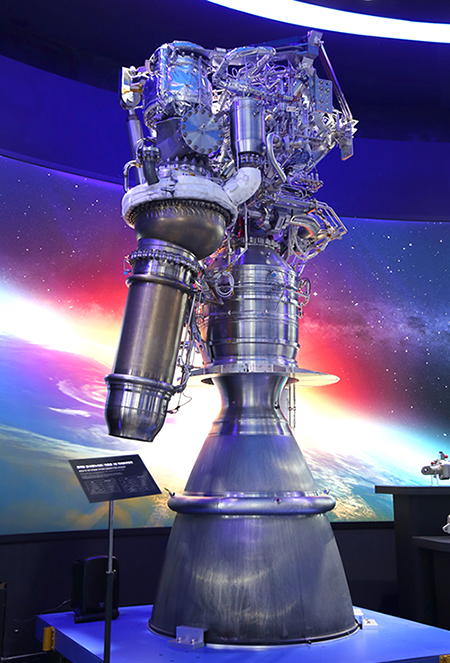
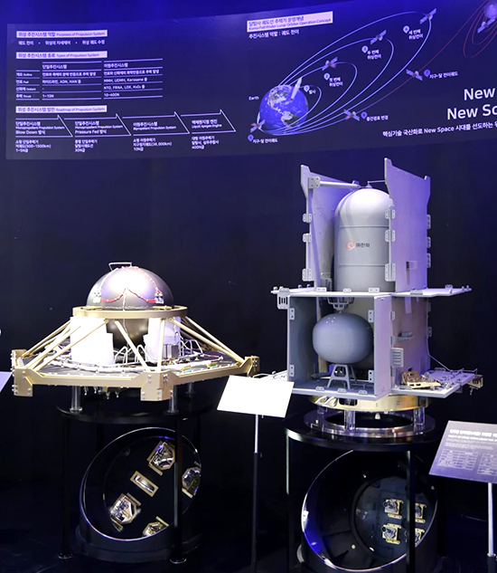
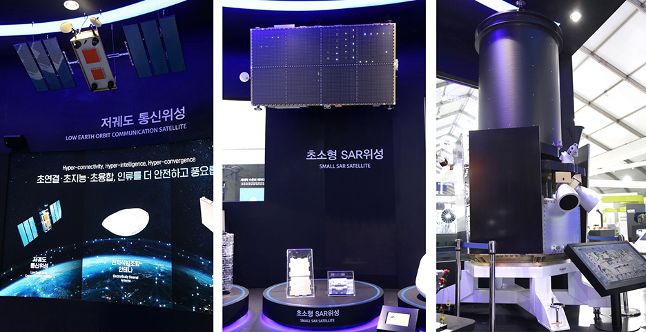
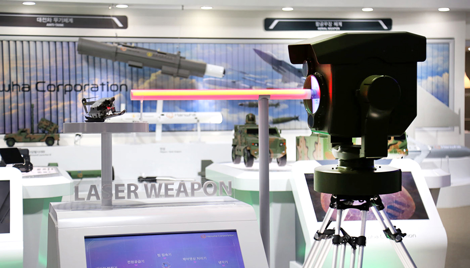
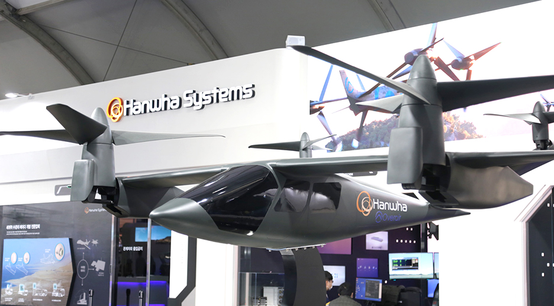
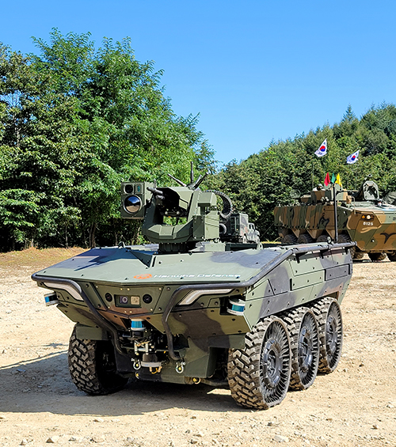

한화, 서울 ADEX 2021 참가… 우주 기술, 미래 첨단 무기체계 한자리에
한화가 지난 3월 스페이스 허브(Space Hub) 출범 후 처음으로 방산계열사의 우주 사업 역량을 한데 모아 전시한다.
한화 방산계열사(㈜한화, 한화에어로스페이스, 한화디펜스, 한화시스템)는 19일부터 23일까지 서울공항(경기도 성남시)에서 진행되는 '서울 국제 항공우주 및 방위산업전시회(Seoul ADEX 2021)'에서 1,100㎡ 규모의 통합 전시관을 운영한다.
◎ 누리호 연소 시험에 사용된 75톤 로켓엔진 실물 전시… 뉴 스페이스(New Space) 선도하는 다양한 우주 기술 선보여한화 방산계열사는 전시관 중앙에 대규모 스페이스 허브(Space Hub) zone을 구성하고 발사체, 광학‧통신 위성, 위성추진계 등 우주 기술을 총망라했다.
75톤 액체로켓 엔진(한화에어로스페이스)은 오는 21일 고흥에서 발사를 기다리고 있는 누리호에 장착된 것과 동일한 제품으로 실제 연소 실험에 사용됐던 실물이 전시된다. 누리호는 1.5톤급 실용위성을 지구 저궤도(600~800km)에 쏘아 올리는 발사체로 총 3단으로 구성됐다. 1단에 75톤급 액체엔진 4기, 2단에 75톤급 1기, 3단에 7톤급 1기가 탑재된다. 한화에어로스페이스가 터보펌프 등 핵심 구성품과 엔진 총제작에 참여했다.
 ≫ 75톤 액체로켓 엔진(실물)_한화에어로스페이스전시 부스 초입에서는 '고체연료 우주발사체(㈜한화)'와 '위성추진계(㈜한화)'를 볼 수 있다. 고체연료 우주발사체는 설계, 보관, 즉시대응, 제작비 측면에서 장점이 있기 때문에 민간 기업의 우주 사업 참여를 앞당기는 기술로 평가받는다. 우주 공간에서 위성을 이동할 수 있게 해주는 '위성추진계'는 연료 연소 시 발생하는 가스의 추력을 활용해 자세 제어, 궤도 수정 등의 기능을 수행한다. 내년 발사될 달 탐사 궤도선에 실제 적용될 예정이다.
 ≫ 위성추진시스템다양한 위성도 전시된다. 우주 인터넷 등 다양한 위성통신서비스 구현이 가능한 '저궤도 통신위성 플랫폼(한화시스템)'과 국내 최초로 100kg 이하, 해상도 1m급 개발에 성공한 '초소형 SAR위성(한화시스템)', 전세계에서 운용 중인 상용위성 중 가장 높은 해상도(픽셀당 0.3m급)를 지닌 '광학위성(쎄트렉아이)'이 대표적이다.
* SAR(Synthetic Aperture Radar, 합성개구레이다): 위성에서 레이다파를 발사한 뒤 돌아오는 반사파를 이용하여 관측하는 기술로 야간,악천후에도 높은 해상도의 영상을 획득할 수 있음  ≫ (왼쪽부터) 한화시스템 저궤도 통신위성 플랫폼, 한화시스템 초소형 SAR위성, (맨 우측) 쎄트렉아이 광학위성 ◎ 레이저, 틸트로터(tilt-rotor), AI 등 첨단기술 적용한 미래 무기체계 전시드론과 같은 소형 항공기의 위협에 대응하기 위한 솔루션으로 '소형레이저무기체계(㈜한화)'를 선보인다. 한국형 스타워즈 사업으로 불리는 소형레이저무기는 고에너지 레이저로 소형 표적을 정밀하게 타격할 수 있다. 또한, 소형‧경량화를 통해 SUV부터 장갑차까지 다양한 플랫폼에 탑재가 가능한 저비용, 고효율 대공 무기체계다.
 ≫ 소형레이저무기체계(HELLCAT. High Energy Lightweight Laser to Counter Asymmetric Threat)전시장 한편으로 민수용 UAM 기술을 활용한 '국방 틸트로터 수직이착륙기'가 눈길을 끈다. 한화시스템은 미국의 오버에어(Overair)사와 함께 민수용 에어모빌리티 기체 '버터플라이(Butterfly)'를 2025년도 상용화 목표로 개발 중이다. '버터플라이'의 수직이착륙, 고기동 특성은 인원∙물자 수송, 감시∙정찰 등 국방 분야에서도 다방면으로 사용이 가능해 선행 개발을 준비 중이다.
* 틸트로터(tilt-rotor): 헬리콥터와 터보프롭 비행기의 특성을 동시에 지닌 수직이착륙항공기  ≫ 국방 틸트로터 수직이착륙기사람이 탑승하지 않아도 AI 기반 자율주행 기술과 원격 조종을 통해 전장에서 다양한 임무를 수행할 수 있는 '다목적무인차량(한화디펜스)'도 전시된다. 지능형 무인차량은 병사 대신 물자‧탄약‧부상자를 수송하고, 화력 지원도 가능해 군의 전투 효율을 한 단계 업그레이드 시켜줄 무기체계로 기대를 모으고 있다. 한화디펜스는 지난 7월 수출을 목표로 기존보다 적재 중량과 항속 거리 등을 강화한 6륜 구동 무인차량을 새로 개발 완료했다.
 ≫ 지능형 다목적무인차량 한화에어로스페이스 신현우 대표이사는 한화는 정부와 적극 협력해 우리나라 우주 독자기술 확보에 앞장서겠다며, 위성 서비스나 UAM, 레이저무기 같은 미래 신사업 모델도 지속 개발해 우주와 방산을 모두 아우르는 글로벌 기업으로 성장해 나가겠다고 밝혔다. ◆ 회사별 전시회 참가 내용 ◎ 한화에어로스페이스한화에어로스페이스는 국내유일 가스터빈엔진 전문 기업이다. 미국 GE사와의 기술제휴를 통해 차세대 전투기 KF-21의 엔진 통합 개발을 주도했다. 가스터빈 엔진과 항공 기계분야의 축적된 첨단기술을 바탕으로 한국형 발사체 '누리호' 발사에 참여해 핵심기술인 엑체로켓 엔진, 터보 펌프와 각종 밸브류의 생산을 담당하는 등 항공우주 분야에서도 독보적인 위상을 구축해나가고 있다.
이번 전시회에서는 대한민국 공군의 현재와 미래를 담당하는 엔진들을 전시한다. 공군의 주력기인 F-15K와 KF-16전투기용 F100 엔진, T-50 훈련기ㆍFA-50전투기용 F404엔진, 차세대 한국형 전투기인 KF-21 보라매의 F414엔진을 선보인다. 해군 함정의 주력 추진기관인 LM2500과 통합전기추진체계, 함대함 유도탄 엔진도 공개한다.
◎ ㈜한화 ㈜한화는 4차 산업혁명 시대를 맞아 첨단 무기체계 국산화를 적극 추진 중으로, 고에너지 레이저 기술을 적용한 미래형 무기체계도 그 중 하나다. 레이저를 이용해 급조폭발물, 불발탄 등을 신속, 안전하게 무능화시키는 레이저폭발물처리기 개발을 완료했고, 2019년 방위사업청 주관의 레이저 대공무기 체계개발 사업의 시제제작업체로 국내 최초 선정됐다. 또한 지난 5월에는 ADD와 레이저 발진기 시제 제작 계약(4년 개발 기간에 계약규모 총 243억 원)을 체결하며, 레이저 무기 원천 기술 국산화도 진행 중이다.첨단 무기체계에서 중요한 역할을 하고 있는 항법장치 분야에서도 뛰어난 기술력을 보유하고 있다. 항법장치는 외부 도움 없이 센서를 통해 측정한 가속도와 각속도 정보를 기반으로 비행체의 위치, 속도, 자세 정보를 제공하는 시스템으로 가속도를 측정하는 가속도계 센서와, 각속도를 측정하는 자이로 센서, 항법컴퓨터로 구성되어 있다. 또한 재밍(jamming, 전파방해) 신호로 인해 위성항법장치가 무력화되는 것을 방지해주는 항재밍 기술도 함께 개발 중이다. ㈜한화는 전술급 유도무기 및 지상 차량용 항재밍 장치를 자체 개발하여 국산화했다.
◎ 한화시스템한화시스템은 ▲우주 ▲항공 ▲방공 ▲관측 ▲워리어플랫폼 ▲통신기술 등 지상∙공중 및 우주의 모든 플랫폼간 초연결∙초지능∙초융합 통합 솔루션을 제시하며 첨단 방산을 이끌 미래 기술 역량을 선보인다.
Space Hub존에서는 '저궤도 군집 통신위성(LEO Satellite Constellation)'과 '저궤도 위성통신안테나'를 통해 세계 어디서나 이동중에도 안정적인 통신이 가능한 초공간 인프라 통합 솔루션을 선보인다. 국내 최초로 100kg 이하, 해상도 1m급 성능 개발에 성공한 '초소형 SAR위성'도 전시한다. SAR위성은 야간∙악천후에도 영향을 받지 않고 전천후 영상정보 획득이 가능하다.
Air존에서는 민수용 UAM 기술을 활용한 국방 틸트로터 수직이착륙기를 소개한다. 한화시스템이 오버에어社와 함께 개발중인 UAM기체는 수직이착륙∙고기동 특성을 보유하고 있어 인원∙물자 수송, 감시∙정찰 등 국방 분야에서도 다방면으로 사용 가능해 선행 개발을 준비 중이다.
Air Shield존에서는 한국형 아이언돔으로 불리는 '한국형 장사정포요격체계(LAMD)'의 ▲장사정포요격체계용 다기능레이다 ▲교전통제기술 ▲유도탄에 적용할 RF탐색기 기술력을 소개한다. 한화시스템은 KF-21 AESA레이다∙울산급 호위함 Batch-3 다기능레이다 개발 등 독보적인 레이다 기술 경쟁력을 보유하고 있으며, 육군 방공C2A∙함정전투체계∙ 한국형 탄도탄 작전통제소 개발 등 교전 통제 분야에서도 국내 최고의 기술력을 인정받고 있다.
이밖에도 Surveillance존에는 ▲Land 400 장갑차 상황인식 카메라 ▲360도 AI 상황인식 시스템 ▲TOD AI 영상처리시스템을, Warrior Platform존에는 지능형 화기조준시스템과 병사용 각종 핵심 구성품을, Communication존에서는 모든 플랫폼간 유기적 연동 및 신속한 정보 공유를 위한 미래형 통합단말기가 전시된다.
◎ 한화디펜스한화디펜스는 '방위산업의 미래와 글로벌 시장으로의 도전'을 주제로 AI/자율주행 전투차량과 미래 전장에 대비하는 차세대 기술 개발 역량 등을 집중 홍보한다.
한화디펜스는 인공지능 등 4차 산업혁명 기술을 접목한 국방로봇 개발을 주도하며 대한민국의 '新자주국방'의 첨병 역할을 하고 있다. 지난 2006년 이후 15종 이상의 무인체계 및 국방로봇 관련 국책 과제를 수행하며 국내에서 가장 풍부한 경험과 검증된 기술력을 갖고 있다.
가장 먼저 시선을 끄는 제품은 '지능형 다목적무인차량'이다. 지능형 다목적무인차량은 병사 대신 물자/탄약/부상자를 수송하고, 장착된 원격무장으로 화력지원도 가능해 우리군의 전투효율을 한 단계 업그레이드 시켜줄 무기체계로 기대를 모으고 있다. 다목적무인차량은 아직 세계적으로도 전력화된 사례가 없는 미래 무인화체계 장비로 보병부대에 편성되는 2톤급 차량이다. 위험한 전장 환경에서 병사 대신 원격 또는 자율 운행하며 △감시·정찰 △통신중계 △물자 수송 △부상병 이송 △근접전투 등 다양한 임무를 수행할 수 있는 미래형 국방로봇 체계다. 특히 한화디펜스가 지난 7월 신규 개발한 6륜구동 플랫폼의 지능형 다목적무인차량은 적재중량과 항속거리 등 주요 성능이 대폭 강화된 세계 최고 수준의 성능을 갖추고 있어 우리 군의 전력화뿐만 아니라 향후 해외수출도 기대된다. 이 차량은 지난달 28일 육군 제5보병사단과 군 시범운용 업무협약을 체결하고 시범운용에 들어갔다.
차세대 동력원으로 주목 받고 있는 궤도차량용 Hybrid 전기추진장치도 이목을 끈다.
궤도차량용 Hybrid 전기추진장치는 배터리나 수소연료의 전기에너지로 고출력 모터를 작동시켜 장갑차/전차와 같은 궤도차량을 기동시키는 차세대 동력장치이다. 국내 최초로 전기기계식 변속기(EMT, Electro Mechanical Transmission) 등 궤도차량용 Hybrid 전기추진장치 핵심기술을 개발하는 과제가 한화디펜스 주관으로 올해 연말 착수하여 25년까지 완료할 계획이다. 장갑차/전차 등 궤도차량에서 Hybrid 전기추진장치를 사용하면 기존 내연기관 궤도차량에 비해 기동성과 연료 효율 향상은 물론, 저소음 주행을 통해 생존성을 높일 수 있을 뿐만 아니라 군사작전 간 많은 이점을 얻을 수 있어 미래 우리 군의 전력 향상에 많은 기여를 할 것으로 평가 받는다.